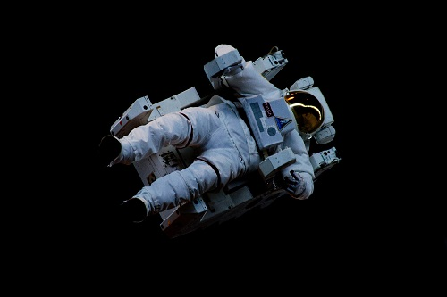
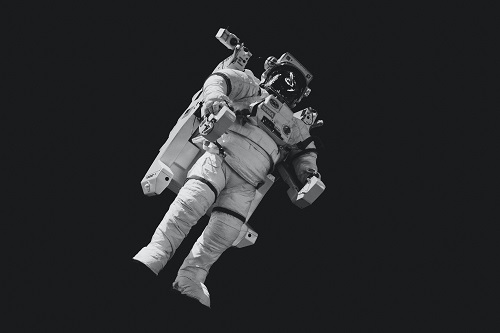
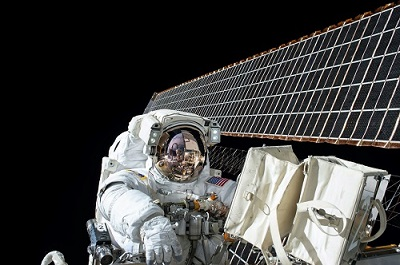

Who`s in space
Astronauts works for example with science, research and takes part of medical experiments to find out how microgavity effects their body. They are maintaining the International Space Station and equipments. Astronauts do also spacewalks to repair, or to debloy a satellite. Most missions last two-three weeks, but can be as long as six months.
Word "astronaut" refers to those from USA, Canada, Europe and Japan who travel into space. Altough many countries have their own name to astronauts. For example Cosmonats who travel into space are from Russia, and Taikonauts are from Japan. There have been people atleast from 41 different countries in space.


